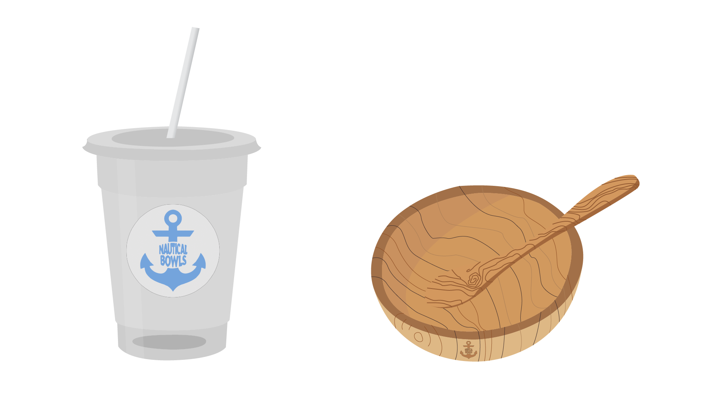
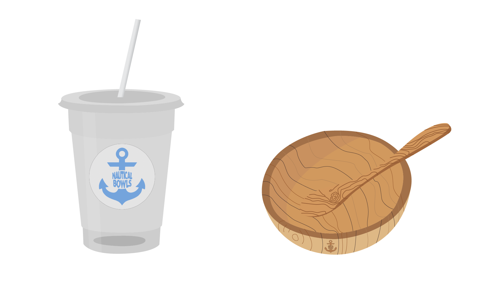
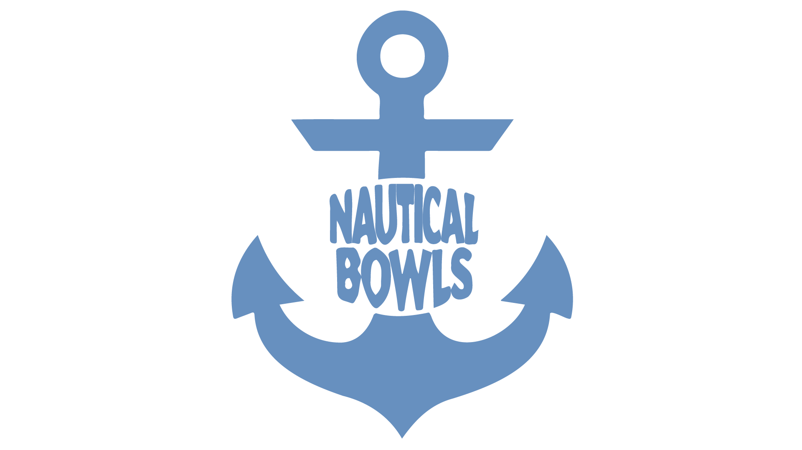
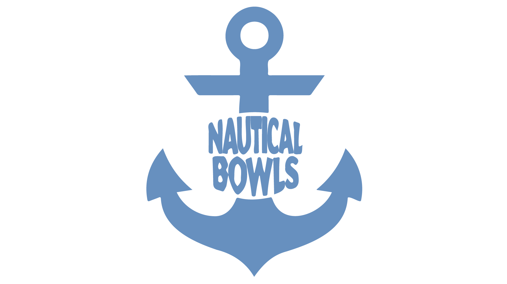
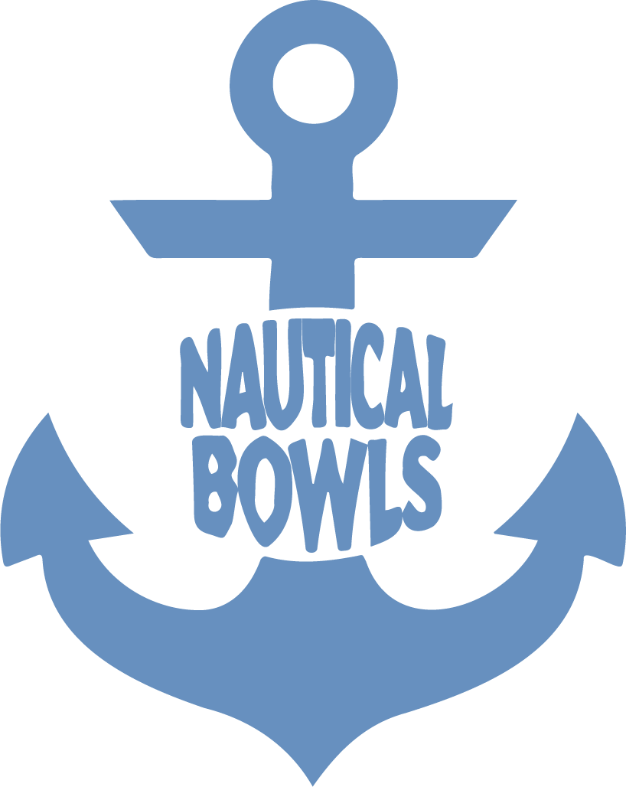
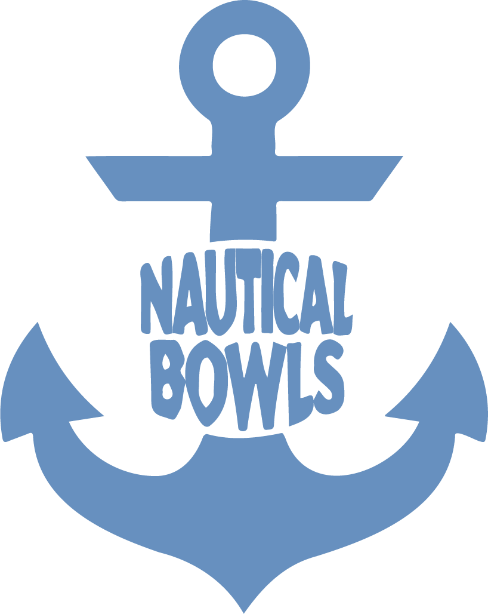

Yearbook Pages
These yearbook pages showcase my design work created for my high school yearbook using Canva. I focused on combining clear layout structure with creative visual elements to highlight student achievements, events, and memorable moments. Each spread was designed to balance photos, typography, and color in a way that feels both organized and expressive. I formed layouts for many of the pages like all of the sports pages and the superlative pages.
.png)
 

 

 



Nautical Bowls Rebrand
For this project I had to create a total rebrand of a brand that already existed with real world examples. I chose to redesign Nautical bowls taking a more ocean-ish approach. I did most of the work for this project in illustrator and animated a cover for it in adobe after effects which can be seen in the motion design section.

Character Design
In my Design Lab 2 class I used strictly Adobe Illustrator to create this image that shows me at the beach. Every item was drawn out of illustrator by me on my MacBook and placed into the photo. I tried to use my skills in color theory and layering to make the photo has some dimension and to add more details.

Diversity Awareness Poster
In my Design Lab 2 class I used strictly Adobe Illustrator to create this poster to encourage diversity awareness. I wanted to play with creating texture in this piece and created both corkboard and paper textures. I also played with dimensions in this to make it feel like a real corkboard with things poking out of it.

Tame Impala Poster
In my Design Lab 2 class I used strictly Adobe Illustrator to create d this poster that shows different elements of my favorite artist, Tame Impala’s different album covers. I used different aspects of each album cover and combines them to create one promotional poster that intends to show a cohesive idea and visual.